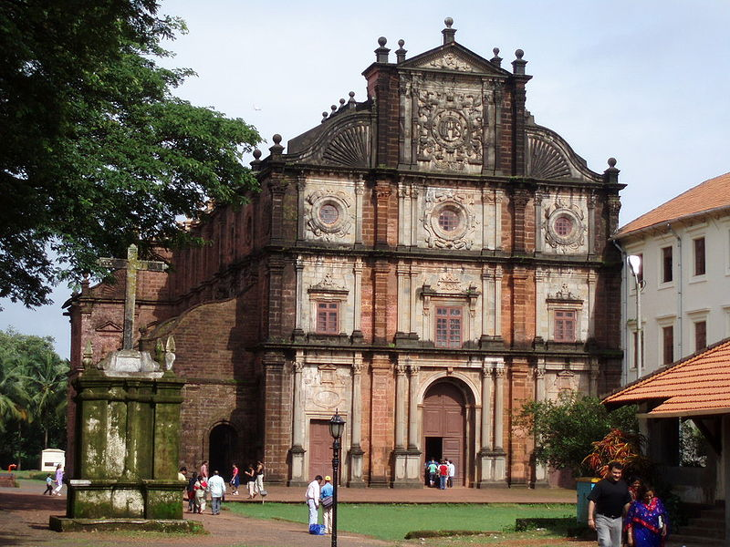
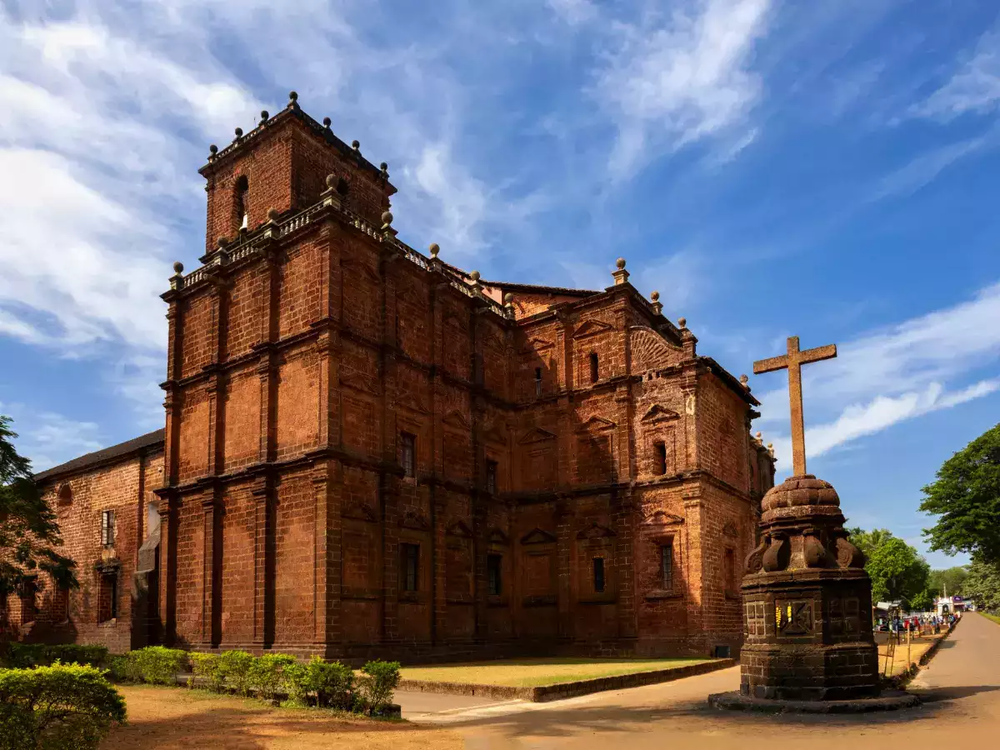
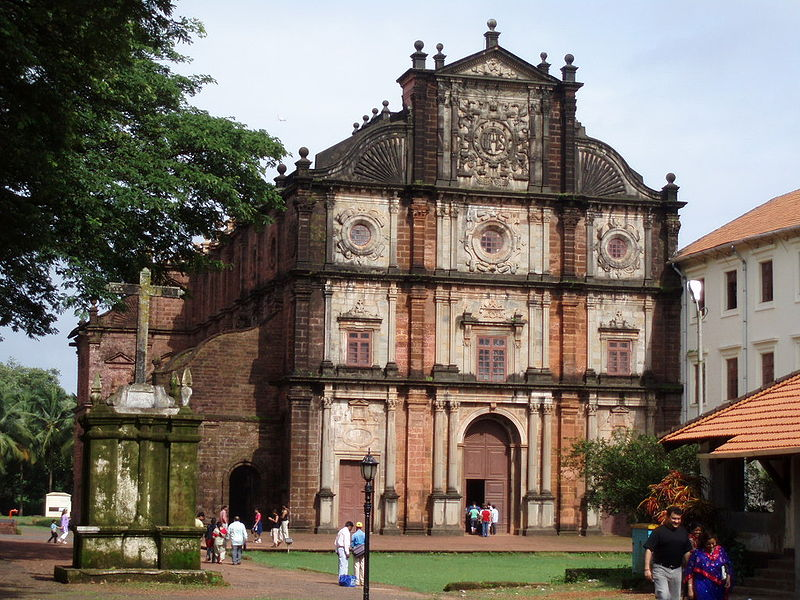
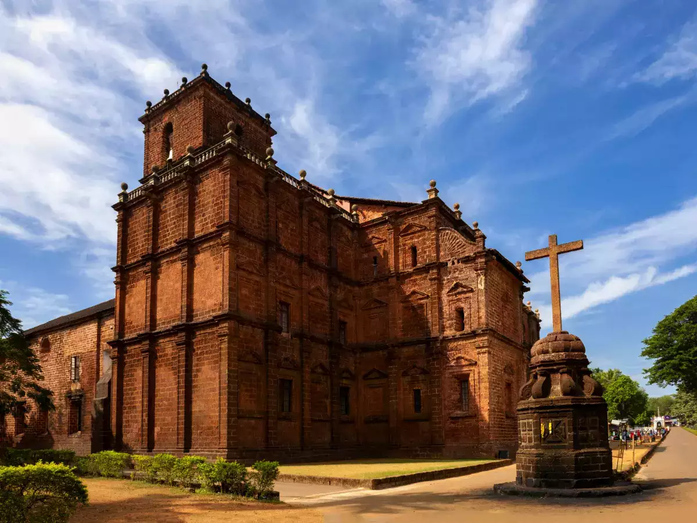

Aguada Fort
Aguada Fort is a well-preserved seventeenth-century Portuguese fort in Goa. It stands on the Sinquerim Beach overlooking the Arabian Sea. The fort was constructed to guard against Dutch and Maratha invasions.


Aguada Fort is a well-preserved seventeenth-century Portuguese fort in Goa. It stands on the Sinquerim Beach overlooking the Arabian Sea. The fort was constructed to guard against Dutch and Maratha invasions.
The Basilica of Bom Jesus is a UNESCO World Heritage Site and one of the most famous churches in Goa. It holds the mortal remains of St. Francis Xavier, a revered Jesuit missionary.

 



Se Cathedral is one of the largest churches in Asia and is dedicated to St. Catherine of Alexandria. The cathedral is known for its impressive architecture and historical significance.


Chapora Fort is perched on a hillock overlooking the Vagator Beach. The fort offers panoramic views of the surrounding areas. It gained popularity through the Bollywood movie "Dil Chahta Hai."